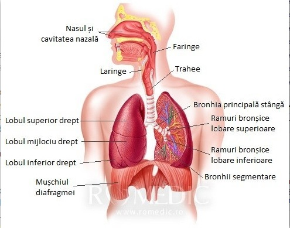

Sistemul respirator
Plamanii sunt principalul component al sistemului respirator, alaturi de o intreaga retea de organe si nervi.
Plamanii sunt organe moi, cu aspect buretos si au o culoare roz-gri, putand deveni negriciosi de la fumat dar chiar si la nefumatori din cauza aerului poluat. Plamanul drept este subdivizat in trei lobi, pe cand cel stang doar in doi. Pleura acopera suprafata plamanilor si interiorul peretelui toracic. Aceasta este o membrana care contine o pelicula de lichid lubrifiant (surfactant) intre cele doua foite care o alcatuiesc.
Sistemul respirator este alcatuit din cai respiratorii superioare, inferioare, unitatea respiratorie, cutia toracica, diafragmul si structurile subdiafragmatice.
Sistemul respirator are ca principala functie schimbul de gaze. Alaturi de aceasta, el mai indeplineste urmatoarele roluri: generarea vocii, conditionarea aerului, echilibrul acido-bazic, mirosul.
Respiratia implica: ventilatie (inspir, expir), schimb gazos si utilizarea oxigenului (in respiratia celulara) .
Pentru a putea investiga ventilatia pulmonara este necesara cunoasterea volumelor si capacitatilor pulmonare:
- CPT (capacitatea pulmonara totala)
- CVF (capacitate vitala fortata)
- CV (capactiate vitala)
- VR (volum rezidual)
- CI (c capacitate inspiratorie)
- CRF (capacitate reziduala functionala)
- VEMS (volum expirator maxim pe secunda)
- VIR (volum inspirator de rezerva)
- VC (volum curent)
- VER (volum expirator de rezerva)
Structural, sistemului repirator i se descriu:
1. o portiune de conducere alcatuita din cavitate nazala, nasofaringe, faringe, trahee, bronhii, bronhiole si bronhiole terminale.
Epiteliul respirator este alcatuit din cinci tipuri de celule dupa cum urmeaza: celule bazale, celule in perie, celule cilindrice ciliate, celule caliciforma si celule endocrine (cu granule mici/ Kulchitsky) .
a) Cavitatea nazala
- este impartita in vestibulul nazal si cavitatea nazala propriu-zisa, acestea fiind delimitate de limen nasi.
- peretele superior (tavanul) este reprezentat de lama cribriforma (ciuruita) a etmoidului.
- peretele inferior (planseul) este alcatuit din palatul moale si palatul dur
-peretele lateral contine cele trei cornete nazale (superior, mijlociu, inferior), cele trei meaturi nazale (superior, mijlociu, inferior) si recesul sfenoetmoidal.
b) Faringe
- este impartit in naso-faringe, oro-faringe si laringo- faringe
c) Trahee
- din punct de vedere histologic, cuprinde trei straturi: adeventitia, submucoasa si mucoasa.
- tunica externa descrie o parte cartilaginoasa si una membranoasa
d) Arborele bronsic reprezentat de bronhiile primare, bronhii lobare, bronhiole, bronhiole terminale si bronhiole respiratorii.
- in bronhiolele terminale si cele respiratorii se gasesc celule Clara, care sunt un tip celular neciliat care secreta componenta glicoproteica a surfactantului.
2. o portiune respiratorie propriu-zisa:
a) ducte alveolare
b) saci alveolari
c) alveole: acestea sunt in numar de aproximativ 300 de milioane, au forma poliedrica si aspect de „fagure de miere”. Se distring doua tipuri celulare, in functie se rolul acestora si morfologie:
- alveole de tip I, avand rol structural
- alveole de tip II, avand rolul de a secreta surfactant
Bariera alveolo-capilara este formata din urmatoarele elemente:
- surfactant - apa - peretele alveolar (pneumocitele de tip I) - membrana bazala a peretelui alveolar - membrana bazala a peretelui capilar - peretele capilar (avand epiteliu simplu scumaos)Fortele de recul sunt deosebit de importante in fiziologia respiratiei. Astfel de forte sunt reprezentate de:
- cutia toracica (foita parietala a pleurei) - plamanii (foita viscerala a pleurei) - volumul de repaus elastic al cutiei toracice - volumul de repaus elastic al plamanilor -inegalitatea vidullui pleural (la plamanul vertical, clinostatism) .Un alt indice important este complianta: toracica, pulmonara, statica, dinamica, specifica. Ideea este ca aceasta complianta scade sau creste in diferite patologii (scade in boli restrictive si creste in boli obstructive) .
Un alt indice este distributia rezistentei in caile aeriene, astfel:
- in caile respiratorii superioare este de 80%, curgerea fiind turbulenta
- in caile respiratorii inferioare este de 20 %, curgerea fiind laminara.
Toti acesti indici au formule exacte de calcul si sunt deosebit de importanti pentru investigarea funcionarii fiziologice a sistemului respirator.
In reglarea respiratiei este implicat SNC, la nivelul caruia se gaseste centrul respirator dar si hormoni precum progesteronul (in sarcina) sau eritropoetina cu efect asupra receptorilor periferici.
Vascularizatia pulmonara:
- circulatie nutritiva
- circulatie functionala
- este realizata de vase extra-parenchimatoase si vase intra-parenchimatoase, iar fluxul de sange variaza cu fazele respiratiei.
Patologii asociate sistemului respirator:
- hipoxia (hipoxica, anemica, stagnanata sau histotoxica)
- infectii respiratorii (bronsiolita acuta, pneumonie, tuberculoza s. a. )
- boli fungice ale plamanilor (Histoplasmoza, criptococoza s. a. )
- boli pulmonare cronice
- cancer pulmonar
- boli profesionale
Evaluare- diagnostice specifice
1. Examen obiectiv: anamneza, examen fizic
2. Investigatii paraclinice:
- a) Radiografie/ radioscopie
- b) Tomografie pulmonara
- c) Bronhografie (vizualizarea arbore bronsic)
- d) Angiografie pulmonara (vizioneaza circulatia pulmonara)
- e) Fluoroscopia (permite vizionarea continutului toracic in dinamica si multe incidente)
- f) Scintigrafia
- g) Ecografia
- h) Masurarea rezistentei la flux
- i) Masurarea compliantei
- j) Realizarea buclei flux-volum
- k) Masurarea VR si CRF prin metoda dilutiei gaselor sau pletismograf corporeal